Chain(
layer_1 = Dense(1 => 2, relu), # 4 parameters
layer_2 = Dense(2 => 1), # 3 parameters
) # Total: 7 parameters,
# plus 0 states.
Machine Learning for Computational Economics
Module 04: Fundamentals of Machine Learning
EDHEC Business School
Dejanir Silva
Purdue University
January 2026
Introduction
In this module, we introduce the fundamental concepts of machine learning.
- Our goal is not to provide a comprehensive review of the field
- But rather to develop the core tools needed to study high-dimensional economic models.
We proceed in three steps.
- We show how to represent functions using neural networks.
- We explain how to estimate their parameters using stochastic gradient descent.
- We describe how automatic differentiation enables efficient computation of the gradients.
The module is organized as follows:
- Supervised Learning and Neural Networks
- Gradient Descent and Its Variants
- Automatic Differentiation and Backpropagation
I. Supervised Learning
Supervised Learning
Supervised learning concerns the task of inferring a mapping from inputs to outputs using labeled data.
- It seeks to learn a function \(f\) that maps inputs \(\mathbf{x} \in \mathbb{R}^d\) to outputs \(\mathbf{y} \in \mathbb{R}^p\), given a dataset of labeled pairs \(\{(\mathbf{x}_i, \mathbf{y}_i)\}_{i=1}^I\).
- In essence, this is a regression problem, but one that often involves extremely large input spaces and complex nonlinear dependencies.
Example: Image classification.
- The ImageNet dataset contains over 15 million labeled images spanning more than 22,000 categories.
- Each image is a \(224\times224\times3\) array of pixels, where each pixel takes values between 0 and 255.
A linear model could, in principle, be used to predict the category of an image.
- However, such a model would treat each pixel independently: marginal effects are unrelated to neighboring pixels.
- Images, by contrast, contain strong spatial structure and nonlinear relationships between pixels across channels.
AlexNet
In groundbreaking work, Krizhevsky, Sutskever, and Hinton (2012)—widely known as AlexNet—introduced a deep neural network architecture that achieved dramatic improvements in classification accuracy on ImageNet.
- Their model had eight layers and over 60 million parameters, exceptionally large at the time.
- It demonstrated that deep neural networks could solve complex visual tasks at scale.
ImageNet Image and its RGB Channels
Linear Regression
To illustrate the key concepts in supervised learning, it is useful to start with a familiar model: linear regression.
- Suppose we are given a dataset of \(I\) observations of the input \(\mathbf{x}_i \in \mathbb{R}^d\) and output \(y_i \in \mathbb{R}\) for \(i = 1, \ldots, I\).
- Given the input \(\mathbf{x}_i\), the model prediction \(\hat{y}_i\) is given by the function \(f(\mathbf{x}_i, \mathbf{\theta})\), where \(\mathbf{\theta} \in \mathbb{R}^d\) is a vector of parameters. \[ f(\mathbf{x}_i, \mathbf{\theta}) = \color{#0072b2}{\underbrace{\mathbf{w}^{\top}}_{\text{weights}}}\mathbf{x}_i + \color{#d55e00}{\underbrace{b}_{\text{bias}}} \] where \(\mathbf{\theta} = (\mathbf{w}^{\top}, b)^{\top}\).
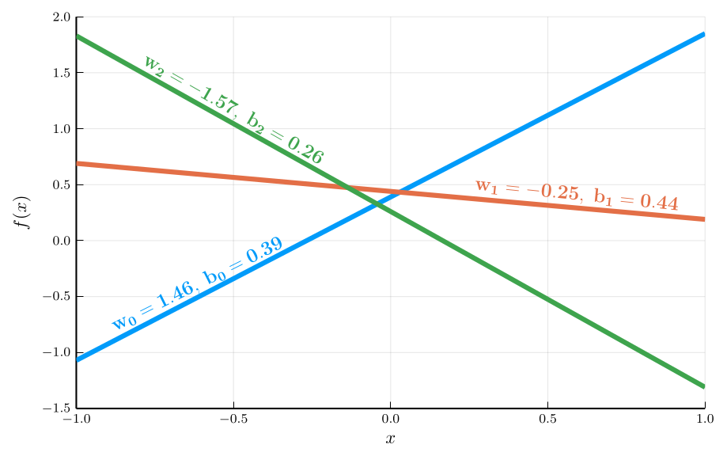
The function \(f(\mathbf{x}_i, \mathbf{\theta})\) defines a family of linear functions
- We obtain different functions by varying the parameters \(\mathbf{\theta}\).
Our goal is to find the parameter values that best fit the data.
- To do this, we define a loss function that measures model fit: \[ \mathcal{L}(\mathbf{\theta}) = \frac{1}{2I} \sum_{i=1}^I (y_i - f(\mathbf{x}_i, \mathbf{\theta}))^2. \] This is the mean squared error (MSE) loss function.
The Least Squares Estimator
Our goal is to find the parameters that minimize the loss function.
- In the linear regression case, we can solve for the optimal parameters in closed form.
- We need to set the gradient of the loss function to zero: \[ \nabla \mathcal{L}(\mathbf{\theta}) = \begin{bmatrix} \frac{\partial \mathcal{L}}{\partial \mathbf{w}} \\ \frac{\partial \mathcal{L}}{\partial b} \end{bmatrix} = \frac{1}{I}\mathbf{X}^{\top} (\mathbf{X} \mathbf{\theta} - \mathbf{y}) = \mathbf{0} \] where \[ \mathbf{X} = \begin{bmatrix} \mathbf{x}_1^{\top} & 1 \\ \mathbf{x}_2^{\top} & 1 \\ \vdots & \vdots \\ \mathbf{x}_I^{\top} & 1 \end{bmatrix} \in \mathbb{R}^{I \times d}, \qquad \mathbf{y} = \begin{bmatrix} y_1 \\ y_2 \\ \vdots \\ y_I \end{bmatrix} \in \mathbb{R}^I. \]
Solving the normal equations yields the least squares estimator: \[ \hat{\mathbf{\theta}} = (\mathbf{X}^{\top} \mathbf{X})^{-1} \mathbf{X}^{\top} \mathbf{y}. \]
Gradient
We denote the gradient of a function \(f(\mathbf{x})\in \mathbb{R}\) with respect to \(\mathbf{x}\in \mathbb{R}^d\) as \(\nabla f(\mathbf{x})\in \mathbb{R}^d\).
- The gradient is a column vector, so its differential is written as \(d f(\mathbf{x}) = \nabla f(\mathbf{x})^{\top} d\mathbf{x}\).
Gradient Descent
In general, we cannot solve for the parameters in closed form.
- In this case, we need to use an iterative method to find the parameters, such as gradient descent.
Starting from an initial guess \(\mathbf{\theta}^{(0)}\), gradient descent updates \(\mathbf{\theta}\) in the direction opposite to the gradient of the loss function.
- To see why, note that the change in the loss function is approximately given by: \[ \mathcal{L}(\mathbf{\theta} + \Delta \mathbf{\theta}) - \mathcal{L}(\mathbf{\theta}) \approx \nabla \mathcal{L}(\mathbf{\theta})^{\top} \Delta \mathbf{\theta}, \qquad \qquad |\nabla \mathcal{L}(\mathbf{\theta})^{\top} \Delta \mathbf{\theta}| \leq \|\nabla \mathcal{L}(\mathbf{\theta})\|\,\|\Delta \mathbf{\theta}\| \]
- The largest reduction in the loss function is achieved when \(\Delta \mathbf{\theta}\) is proportional to the negative gradient.
Given a learning rate \(\eta\), the gradient descent update rule is: \[ \mathbf{\theta} \leftarrow \mathbf{\theta} - \eta \nabla \mathcal{L}(\mathbf{\theta}) \]
Computational cost
The gradient of the loss function with respect to the parameters is given by: \[ \nabla \mathcal{L}(\mathbf{\theta}) = \frac{1}{I} \sum_{i=1}^I \big(f(\mathbf{x}_i, \mathbf{\theta}) - y_i\big)\, \nabla_{\mathbf{\theta}} f(\mathbf{x}_i, \mathbf{\theta}). \] Each iteration of gradient descent therefore requires evaluating \(\nabla_{\mathbf{\theta}} f(\mathbf{x}_i, \mathbf{\theta})\) for all \(I\) observations.
- For large datasets, this can be computationally expensive
Implementation of Gradient Descent
Algorithm: Gradient Descent
Input: Initial guess \(\mathbf{\theta}^{(0)}\), learning rate \(\eta\)
Output: Parameter estimate \(\mathbf{\theta}\)
Initialize: \(t \gets 0\)
Repeat until \(\|\nabla \mathcal{L}(\mathbf{\theta}^{(t)})\| < \epsilon\):
- Parameter update:
\(\mathbf{\theta}^{(t+1)} \gets \mathbf{\theta}^{(t)} - \eta \nabla \mathcal{L}(\mathbf{\theta}^{(t)})\) - \(t \gets t + 1\)
Return: \(\mathbf{\theta}^{(t)}\)
function ls_grad_descent(y::AbstractVector{<:Real}, x::AbstractVector{<:Real}, θ₀::AbstractVector{<:Real};
learning_rate::Real=0.01, max_iter::Integer=100, ε::Real = 1e-4)
@assert length(x) == length(y)
I = length(x)
X = hcat(x, ones(I)) # design matrix
∇f(θ) = X' * (X * θ - y) / I # gradient
w_path, b_path =Float64[θ₀[1]], Float64[θ₀[2]] # initial values
for _ in 1:max_iter
g = ∇f([w_path[end], b_path[end]])
push!(w_path, w_path[end] - learning_rate * g[1])
push!(b_path, b_path[end] - learning_rate * g[2])
if norm(g) < ε
break
end
end
return (;w = w_path, b = b_path)
endLoss Surface
The loss surface shows the loss for different parameter values.

We can visualize the loss surface as a heatmap.
- The minimum of the loss surface is the parameter values that best fit the data.
- This corresponds to the darkest region in the heatmap.
The animation shows the gradient descent path being traced
The yellow path shows how the algorithm moves toward the minimum.
The red dot marks the true parameter values used to simulate the data.
The algorithm converges to the minimum of the loss surface.
Training and Testing
In the discussion above, we used all available data to estimate the parameters.
- In practice, we typically split the data into a training set and a test set.
- The training set is used to estimate the parameters, the test set is used to evaluate how well the model fits new data.
Consider data generated by a noisy version of the Runge function: \[ y_i = \frac{1}{1+25 z_i^2} + \epsilon_i, \qquad \epsilon_i \sim \text{i.i.d. with } \mathbb{E}[\epsilon_i]=0, \] with \(z_i \in [-1,1]\).
Consider a polynomial regression with regressors: \[ \mathbf{x}_i = [z_i, z_i^2, \ldots, z_i^{d-1}] \]
As the degree \(d\) increases, the model becomes more flexible.
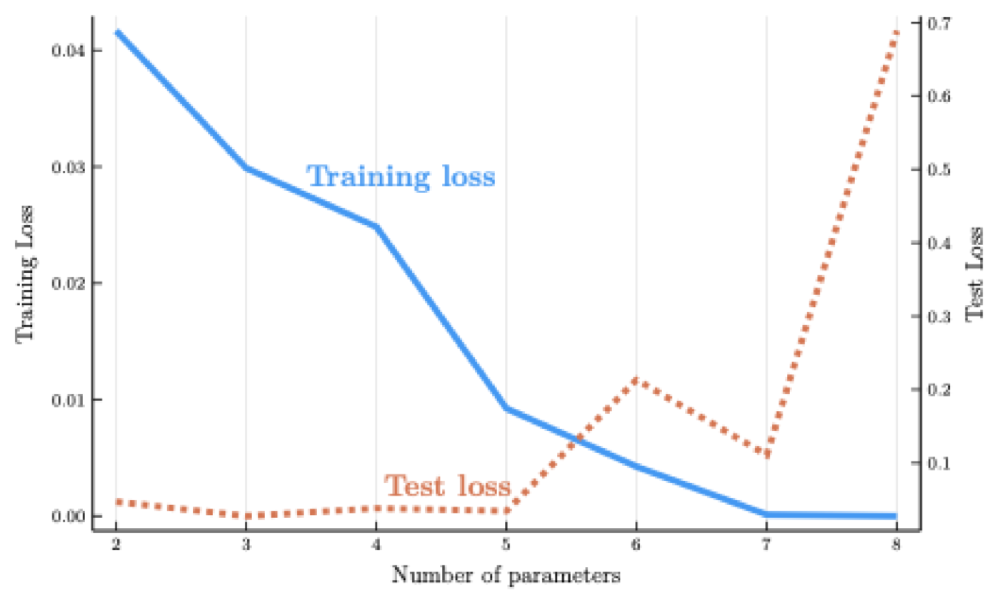
When \(d = I\), the model reaches the interpolation threshold.
But high-degree polynomial interpolants of the Runge function oscillate violently.
The model performs poorly on the test set for high \(d\).
The figure shows the training loss declines steadily as \(d\) increases
- But the test loss eventually rises: this is the hallmark of overfitting
II. Neural Networks
Shallow Neural Networks
We now move from linear to nonlinear models by introducing the shallow neural network (SNN).
- An SNN can be viewed as a generalization of the linear regression model
- A series of intermediate transformations combines a linear function with a nonlinear activation.
Hidden units: a nonlinear transformations of the inputs. \[ h_j(\mathbf{x}, \mathbf{\theta}_j) = \sigma(\mathbf{w}_j^{\top} \mathbf{x} + b_j), \qquad j = 0, \ldots, n-1 \] where \(\sigma\) is an activation function, \(\mathbf{\theta}_j = (\mathbf{w}_j^{\top}, b_j)^{\top}\).
The SNN can be written as: \[ f(\mathbf{x}, \mathbf{\theta}) = \mathbf{w}_n^{\top} \mathbf{h}(\mathbf{x}, \mathbf{\theta}) + b_n, \] where \(\mathbf{\theta} = (\mathbf{\theta}_0^{\top}, \ldots, \mathbf{\theta}_{n}^{\top})^{\top}\) and \(\mathbf{\theta}_n = (\mathbf{w}_n^{\top}, b_n)^{\top}\).
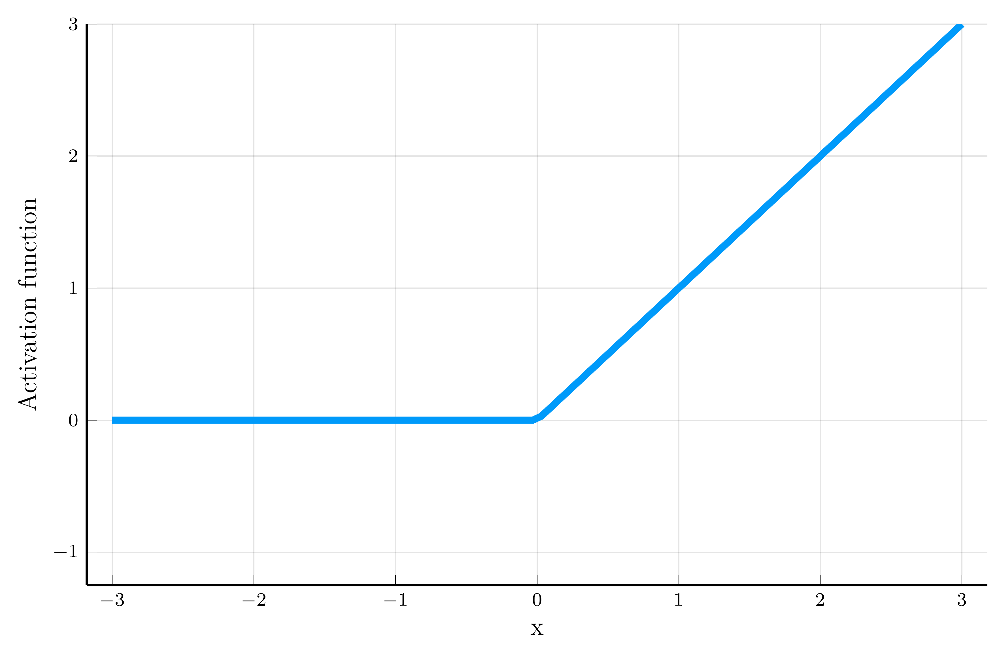
The rectified linear unit (ReLU): \[ \sigma(x) = \max(0, x). \]
This is the mostly used activation function in machine learning.
- We will often focus on the ReLU.
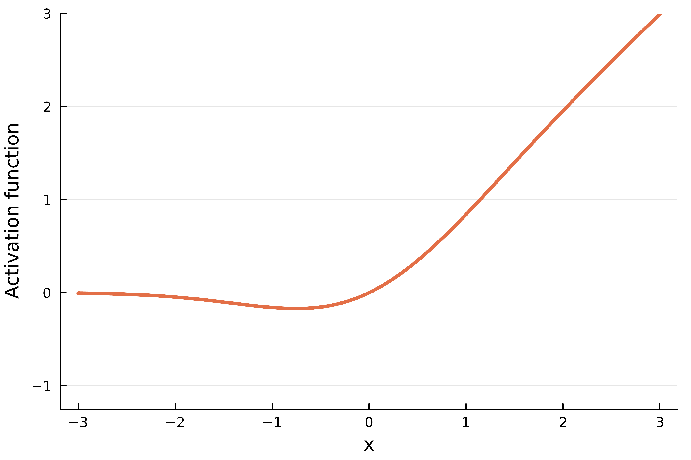
The Gaussian Error Linear Unit (GELU): \[ \sigma(x) = x \Phi(x), \] where \(\Phi(x)\) is the standard normal cdf.
- It has been shown to improve performance in many applications.
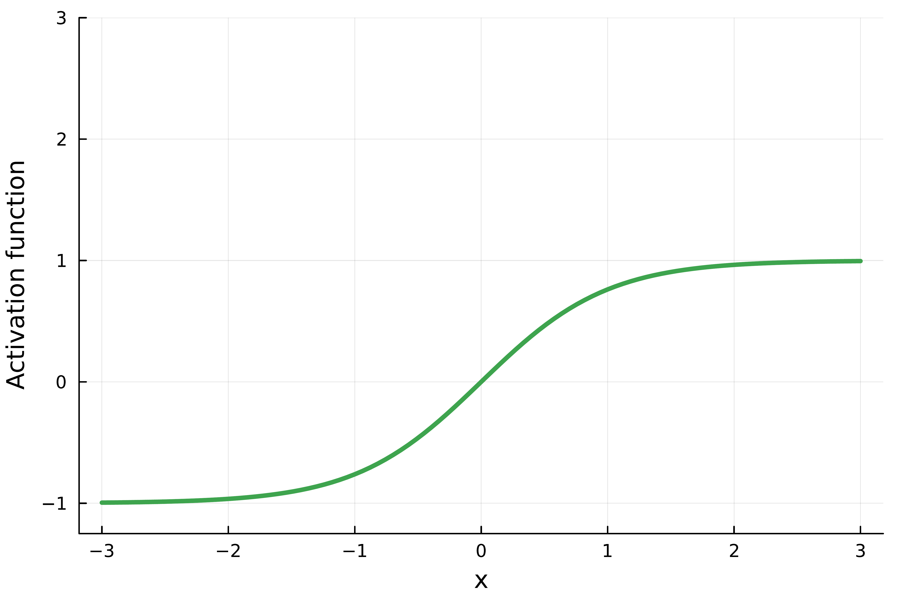
The hyperbolic tangent (tanh): \[ \sigma(x) = \frac{1 - e^{-2x}}{1 + e^{-2x}}. \] It is historically popular in recurrent networks.
- It provides smooth, bounded outputs between -1 and 1.
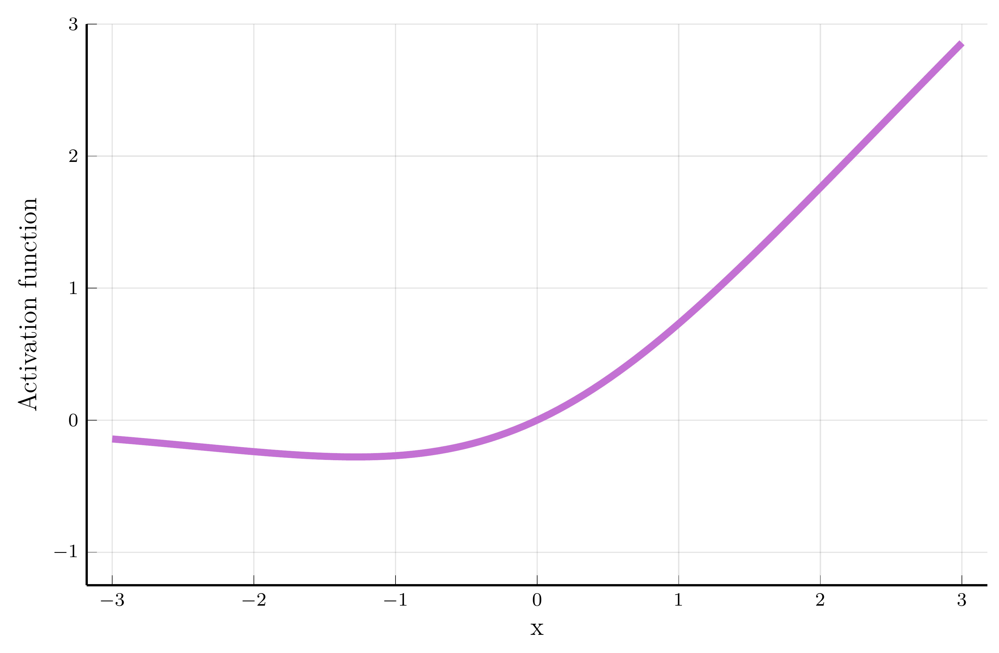
The Sigmoid Linear Unit (SiLU): \[ \sigma(x) = \frac{x}{1 + e^{-x}}. \] Also known as Swish.
- SiLU yields smooth gradients even for negative inputs.
SNNs Architecture and Implementation
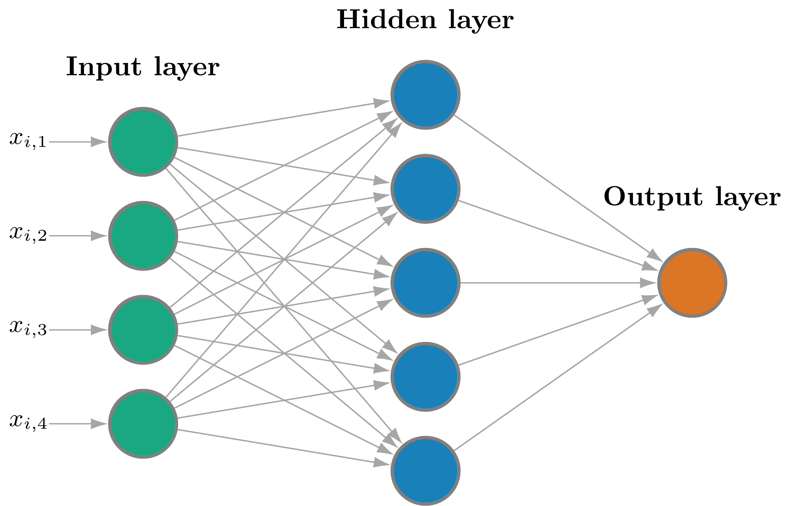
This figure illustrates the architecture of an SNN.
- Green nodes: input layer.
- Blue nodes: hidden layer.
- Orange node: output layer.
The hidden units are also known as neurons.
- A neural network is a collection of neurons.
- A shallow neural network has a single hidden layer.
function shallow_nn(x::AbstractVector{<:Real},
W::AbstractMatrix{<:Real}, b::AbstractVector{<:Real},
wₙ::AbstractVector{<:Real}, bₙ::Real; σ::Function = x->max(0,x))
@assert size(W,2) == length(x) # ncols of W = length of x
@assert size(W,1) == length(wₙ) # nrows of W = length of wₙ
@assert length(b) == size(W,1) # biases for the hidden units
return wₙ' * σ.(W * x .+ b)+ bₙ
end
# Convenience: scalar input (d = 1); w is the column of W
function shallow_nn(x::Real,
w::AbstractVector{<:Real}, b::AbstractVector{<:Real},
wₙ::AbstractVector{<:Real}, bₙ::Real; σ::Function = x->max(0,x))
return shallow_nn([x], reshape(w,length(w),1), b, wₙ, bₙ, σ = σ)
endSNNs as Piecewise Linear Functions
To illustrate the structure of an SNN, consider a one-dimensional input \(x_i \in [0,1]\) and a ReLU activation function.
- Assume that all hidden-unit weights are \(w_j = 1\).
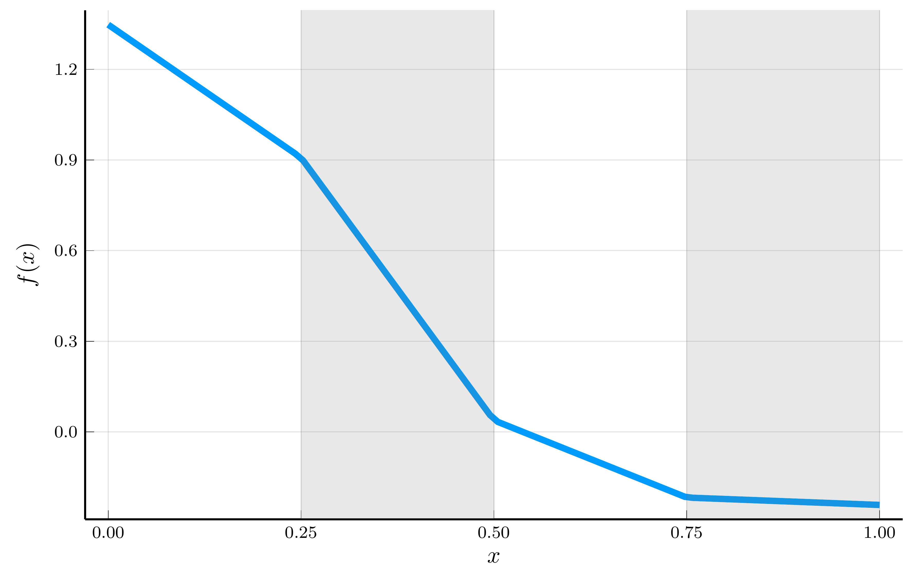
\[ SNN: f(x_i, \theta) = \sum_{j=0}^{n-1} w_{n,j} \max(0, x_i - \hat{x}_j) + b_n, \] where \(\hat{x}_j \equiv - b_j\) is a convenient reparametrization of the biases.
Ordering the breakpoints as \(0 = \hat{x}_0 < \cdots < \hat{x}_{n-1} < 1 \equiv \hat{x}_n\), \[ f(x_i, \theta) = f(\hat{x}_j, \theta) + w_{n,j}(x_i - \hat{x}_j), \qquad x_i \in (\hat{x}_j, \hat{x}_{j+1}], \] with \(f(\hat{x}_0, \theta) = b_n\).
The function is piecewise linear, with the breakpoints \(\hat{x}_j\) learned by the model.
- If we fix the breakpoints to be equally spaced, the network collapses to the locally linear interpolant from Module 3.
- Hence, an SNN can be interpreted as a finite-difference method with an adaptive grid that learns where to place the nodes.
The Adaptive Choice of Breakpoints in Action
ReLU networks adaptively place their breakpoints in regions where the target function exhibits strong nonlinearity.
- To illustrate this, we fit a one–hidden–layer ReLU network to the density of a Beta distribution
- We choose parameters \(\alpha=2\) and \(\beta=10\), so the curvature is concentrated at low \(x\) values.
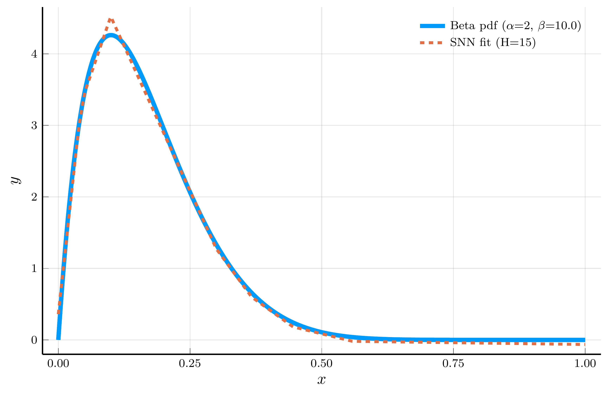
Model fit (15 hidden units)
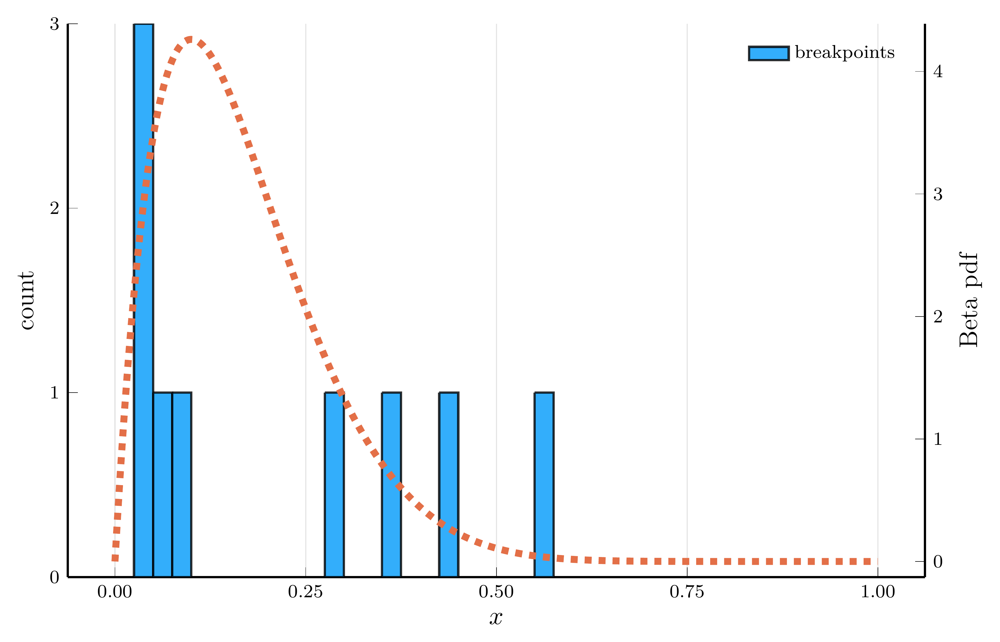
Breakpoint histogram (15 hidden units)
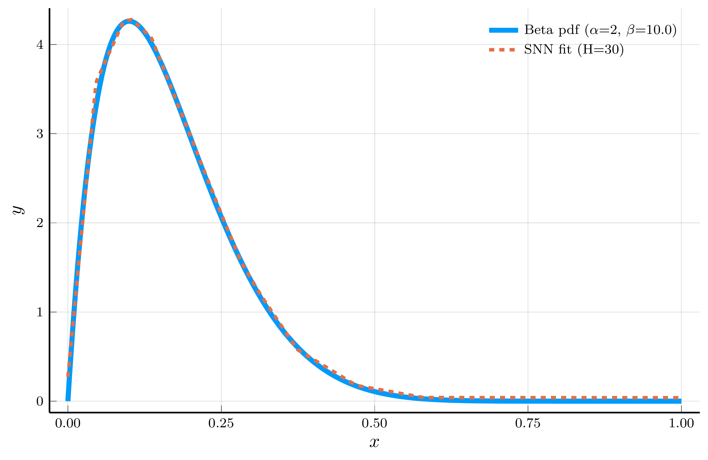
Model fit (30 hidden units)
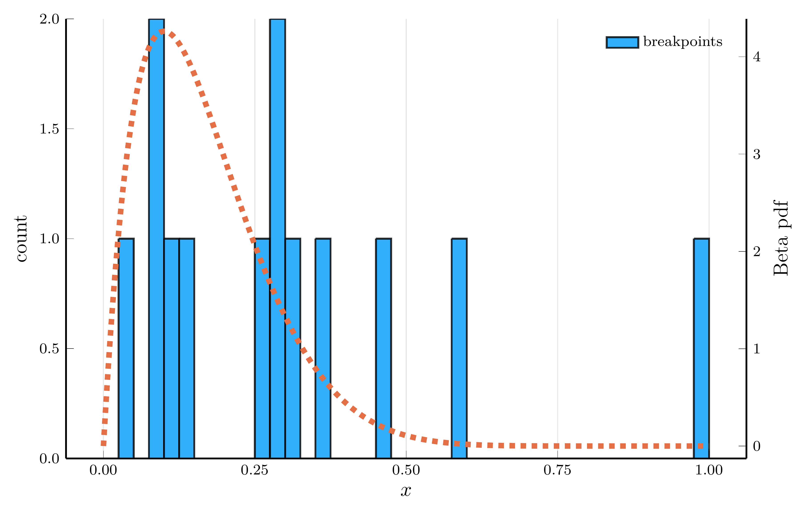
Breakpoint histogram (30 hidden units)
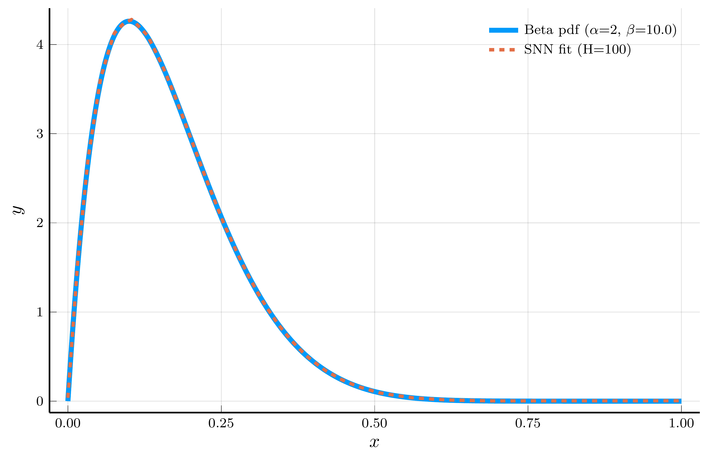
Model fit (100 hidden units)
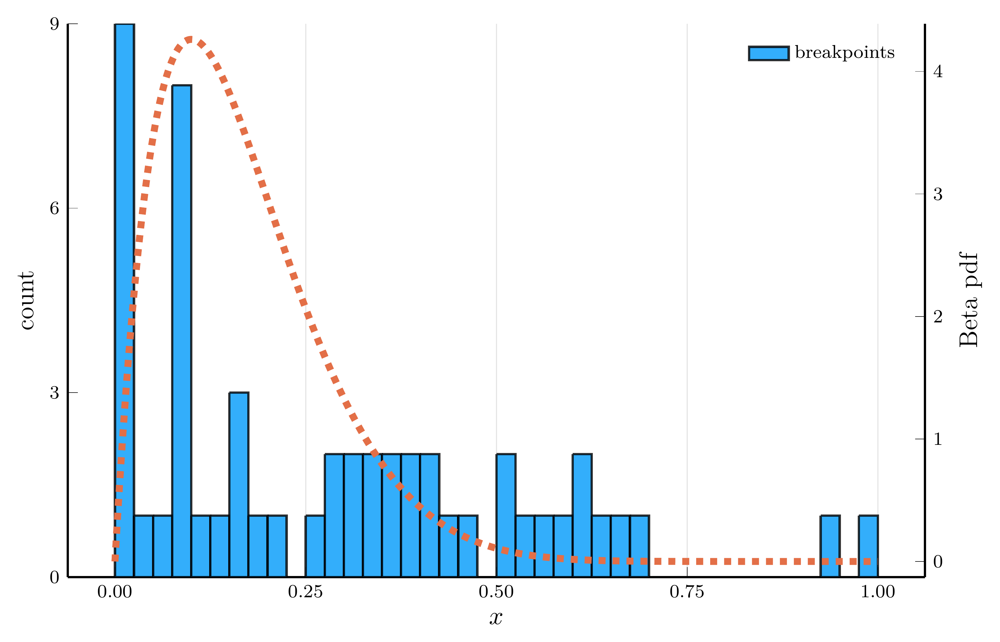
Breakpoint histogram (100 hidden units)
The Universal Approximation Theorem
The piecewise–linear structure of an SNN enables it to approximate nonlinear functions.
- A natural question is: how expressive is this model? What class of functions can an SNN represent or approximate?
The Universal Approximation Theorem provides an answer.
This result is closely related to the Option Spanning Theorem of Ross (1976)
- The result states that options portfolios can replicate any continuous payoff function.
- A ReLu SNN corresponds to a portfolio of call/put options.
The Universal Approximation Theorem establishes that shallow networks are theoretically sufficient
- But it does not imply that they are the most efficient way to approximate a function.
- Achieving high accuracy may require an exponentially large number of hidden units.
- We turn next to a richer class of models—deep neural networks—which can approximate complex functions more efficiently.
Deep Neural Networks
A shallow neural network contains a single hidden layer between the input and output layers.
- Deep neural networks (DNNs) extend this architecture by stacking multiple hidden layers on top of each other.
- Each layer applies a linear transformation followed by a nonlinear activation.
Formally, let the \(n_l\)-dimensional vector of hidden units at layer \(l\) be defined recursively as \[ \mathbf{h}_l(\mathbf{h}_{l-1}, \mathbf{\theta}_l) = \sigma(\mathbf{W}_l \mathbf{h}_{l-1} + \mathbf{b}_l), \qquad l = 1, \ldots, L-1, \] where \(\mathbf{\theta}_l = (\mathrm{vec}(\mathbf{W}_l)^{\top}, \mathbf{b}_l)^{\top}\) collects all parameters of layer \(l\).
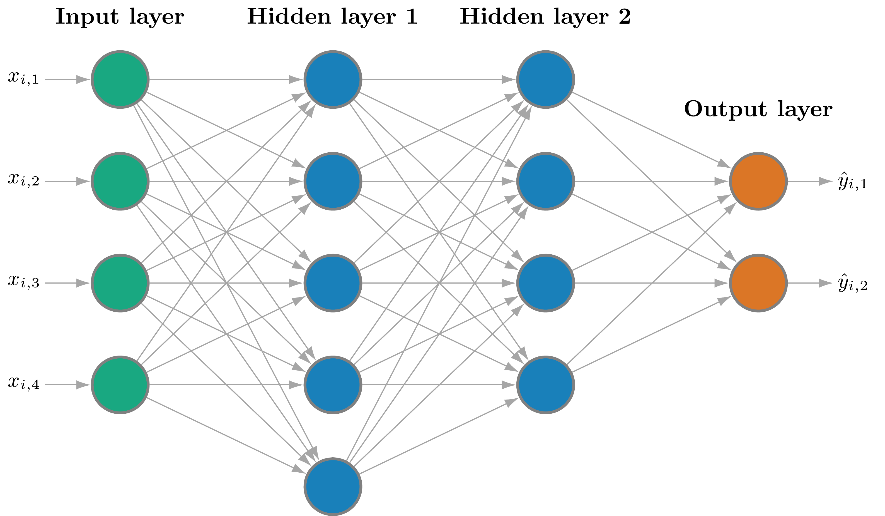
The first hidden layer operates directly on the input: \[ \mathbf{h}_0(\mathbf{x}, \mathbf{\theta}_0) = \sigma(\mathbf{W}_0 \mathbf{x} + \mathbf{b}_0), \] and the output layer is given by \[ f(\mathbf{x}, \mathbf{\theta}) = \mathbf{W}_L \mathbf{h}_L + \mathbf{b}_L, \] where \(\mathbf{\theta} = (\mathbf{\theta}_0^{\top}, \ldots, \mathbf{\theta}_L^{\top})^{\top}\).
Example: Composition of Functions
To understand the expressive power of deep neural networks, consider composing a simple shallow ReLU network with itself. Let \[ f_1(x) = 2\sigma(x) - 4\sigma(x - 0.5), \] which produces a triangular function with a single kink at \(x = 0.5\).
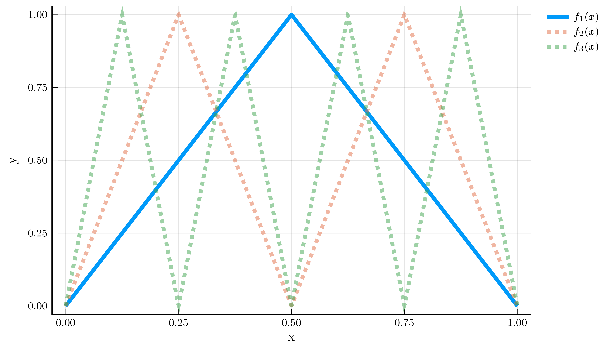
Realized functions \(f_k(x)\) for \(k = 1, 2, 3\)
Composing this function with itself yields \[ f_k(x) = 2\sigma(f_{k-1}(x)) - 4\sigma(f_{k-1}(x) - 0.5). \]
We can represent \(f_k(x)\) as a DNN with \(k\) hidden layers: \[ \mathbf{h}_l(x) = \begin{bmatrix} \sigma(f_{l-1}(x)) \\ \sigma(f_{l-1}(x) - 0.5) \end{bmatrix}. \]
The number of parameters required to represent \(f_k(x)\) is: \[ 4 + (k-1)\times 6 + 3 = 6k + 1. \]
The same function can also be represented as a shallow neural network
- It would require \(2^k\) hidden units to capture all linear regions.
- Depth provides an exponential gain in expressive efficiency.
Universal Approximation Theorem Revisited
Shallow networks are universal approximators:
- With enough width, they can approximate any continuous function on a compact domain.
- A complementary result establishes that depth alone can also achieve universal approximation.
Universal Approximation Theorem Revisited
For any Lebesgue-integrable function \(f \in L^1(\mathbb{R}^n)\), there exists a ReLU deep neural network with width at most \(n + 4\) in every hidden layer that approximates \(f\) to arbitrary precision.
Proof: See Lu et al. (2017).
The width theorem shows that a single wide layer suffices for universal approximation
- The depth theorem shows that even networks of modest width can achieve the same expressive power when sufficiently deep.
- Depth provides an alternative, more parameter-efficient, route to functional richness.
Julia Implementation
We now implement a deep neural network in Julia using Lux.jl.
- To start, we consider the function \(f_1(x) = 2\sigma(x) - 4\sigma(x - 0.5)\) defined above.
The function Chain defines a sequence of layers.
- The
modelobject stores the network structure and provides the parameter count.
Next, we initialize the parameters of the network using a random number generator.
Luxstores parameters explicitly as a nested NamedTuple.- Each layer has its own sub-tuple, or leaf, containing its
weightmatrix andbiasvector.
Updating the Parameters
To reproduce the function \(f_1(x)\), we can manually assign new values to the network parameters.
Luxallows direct updates through a named tuple with the same structure as the initialized parameters:
(layer_1 = (weight = [1.0; 1.0;;], bias = [0.0, -0.5]), layer_2 = (weight = [2.0 -4.0], bias = [0.0]))We can now evaluate the network on a grid of inputs:
1×9 Matrix{Float64}:
0.0 0.25 0.5 0.75 1.0 0.75 0.5 0.25 0.0![]()
Defining a Deep Neural Network
To define a deeper network, we can stack multiple hidden layers.
Chain(
layer_1 = Dense(1 => 2, relu), # 4 parameters
layer_2 = Dense(2 => 2, relu), # 6 parameters
layer_3 = Dense(2 => 1), # 3 parameters
) # Total: 13 parameters,
# plus 0 states.
parameters, state = Lux.setup(rng, model)
parameters = (layer_1 = (weight = [1.0; 1.0;;], bias = [0.0, -0.5]),
layer_2 = (weight = [2.0 -4.0; 2.0 -4.0], bias = [0.0, -0.5]),
layer_3 = (weight = [2.0 -4.0], bias = [0.0]))
xgrid = collect(range(0.0, 1.0, length=9))
ygrid = model(xgrid', parameters, state)[1]'
plot(xgrid, ygrid, line = 3, xlabel = L"x", ylabel = L"f_2(x)", title = "Deep Neural Network", size = (400, 275), label = "")![]()
III. Gradient Descent and Its Variants
Stochastic Gradient Descent
Having defined a neural network and its parameters, the next step is to train the model.
- This often requires finding thousands (or millions) of parameters, a challenging task.
- We discuss how to train the network using stochastic gradient descent (SGD) and its variants.
We have seen how to use gradient descent to minimize a loss function.
The idea is to update the parameters in the direction of the negative gradient of the loss function: \[ \nabla \mathcal{L}(\mathbf{\theta}) = \frac{1}{I} \sum_{i=1}^I \big(f(\mathbf{x}_i, \mathbf{\theta}) - y_i\big)\, \nabla_{\mathbf{\theta}} f(\mathbf{x}_i, \mathbf{\theta}). \]
Computing this full gradient requires evaluating all \(I\) data points at each iteration, which becomes prohibitive for large datasets.
A simple and powerful idea is to approximate the gradient using a random subset of the data.
- Let \(\mathcal{B} \subset \{1, \ldots, I\}\) denote a randomly drawn mini-batch of size \(B \ll I\).
- The stochastic gradient descent (SGD) update replaces the full gradient with \[ \nabla_{\mathbf{\theta}} \hat{\mathcal{L}}(\mathbf{\theta}; \mathcal{B}) = \frac{1}{B} \sum_{i \in \mathcal{B}} \big(f(\mathbf{x}_i, \mathbf{\theta}) - y_i\big)\,\nabla_{\mathbf{\theta}} f(\mathbf{x}_i, \mathbf{\theta}) \]
A simple example
Consider a toy model where \(y_i = \bar{\theta} + \epsilon_i\), with \(\epsilon_i\) a mean-zero disturbance and \(f(\mathbf{x}_i, \mathbf{\theta}) = \mathbf{\theta}\).
- In this case, the full-batch and stochastic gradients simplify to \[ \nabla \mathcal{L}(\mathbf{\theta}) = \frac{1}{I} \sum_{i=1}^I (\mathbf{\theta} - y_i), \qquad \nabla_{\mathbf{\theta}} \hat{\mathcal{L}}(\mathbf{\theta}; \mathcal{B}) = \frac{1}{B} \sum_{i \in \mathcal{B}} (\mathbf{\theta} - y_i). \]
Implementing this example in Julia is straightforward.
# True parameter
rng = Random.MersenneTwister(123)
θ_true, sample_size, batch_size = 2.0, 100_000, 32
noisy_sample = θ_true .+ 0.5 .* randn(rng, sample_size)
# Gradient functions: function and mini-batch version
grad_full(θ) = 2 * (θ - mean(noisy_sample))
grad_sgd(θ, B) = 2 * (θ - mean(noisy_sample[rand(rng, 1:sample_size, B)]))
# Training loop
η = 0.05
θ_full, θ_sgd = 0.0, 0.0
θ_path_full, θ_path_sgd = Float64[], Float64[]
for t in 1:200
θ_full -= η * grad_full(θ_full)
θ_sgd -= η * grad_sgd(θ_sgd, batch_size)
push!(θ_path_full, θ_full)
push!(θ_path_sgd, θ_sgd)
endFull-batch Gradient Descent vs. SGD
Let’s compare the full-batch GD and SGD in our simple example.
- The figure shows the trajectory of the full-batch GD (blue) and SGD (orange).

The full-batch GD converges monotonically to the true parameter.
- SGD introduces noise into the updates
- But converges to the true parameter at roughly the same rate.
SGD is much more efficient than full-batch GD.
- Full-batch GD requires \(I = 100,000\) evaluations of the gradient
- SGD only requires \(B = 32\) evaluations per iteration.
Non-convex Loss Landscape
The previous example considered a convex loss function, where both full-batch GD and SGD converge to the global minimum.
- An additional advantage of SGD emerges in non-convex problems
- Its inherent randomness can help escape local minima.
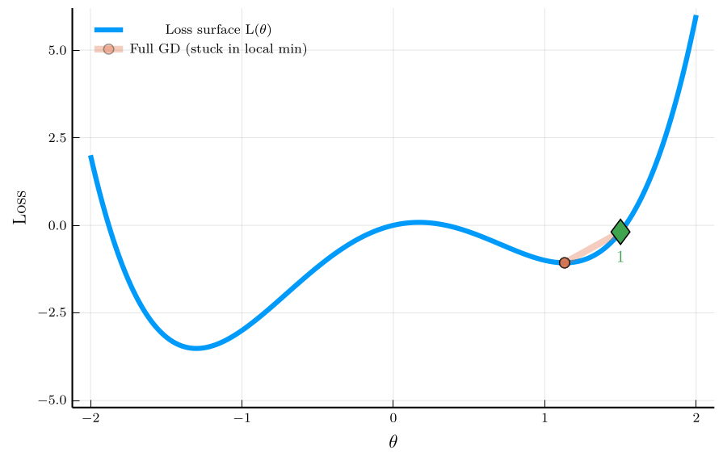
To illustrate the isse, consider the non-convex loss function:
\[ L(\theta) = \theta^4 - 3\theta^2 + \theta, \]
The figure shows the trajectory of full-batch GD and SGD.
- Full-batch GD gets stuck in a local minimum.
- SGD escapes the local minimum due to its noise.
This property is especially valuable in neural-network training,
- Loss landscapes are typically high-dimensional and non-convex.
Momentum
Gradient descent and SGD can struggle when the loss surface is anisotropic,
- That is, steep in some directions and flat in others.
- This can cause the algorithm to oscillate and slow down.
To see this, consider a quadratic loss function and its gradient: \[ L(\mathbf{\theta}) = \frac{1}{2}\mathbf{\theta}^T \Lambda \mathbf{\theta}, \qquad \qquad \nabla L(\mathbf{\theta}) = \Lambda \mathbf{\theta}. \] where \(\Lambda = Diag(\lambda_1, \lambda_2)\) and \(0 < \lambda_1 \ll \lambda_2\).
The update rule for gradient descent is: \[ \theta_{n+1,j} = (1 - \eta \lambda_j)\,\theta_{n,j}. \] Convergence requires \(|1 - \eta \lambda_j| < 1\), i.e., \(0 < \eta < 2 / \lambda_j\).
If one eigenvalue is large, \(\eta\) must be small to ensure stability—causing very slow convergence
- Larger learning rates accelerate convergence but introduce oscillations.
A simple yet powerful modification is to introduce momentum
- Let \(\mathbf{m}\) be an exponentially weighted moving average of past gradients:
\[ \mathbf{m}_{n+1} = \beta \mathbf{m}_{n} + (1-\beta)\nabla L(\mathbf{\theta}_n). \]
- The velocity vector \(\mathbf{m}\) now plays the role of the gradient in the update rule:
\[ \mathbf{\theta}_{n+1} = \mathbf{\theta}_n - \eta \mathbf{m}_{n+1}. \]
Momentum vs. Gradient Descent
Consider the trajectory of gradient descent (blue) and momentum (orange).
- The loss surface has very different curvatures in different directions.
- Gradient descent oscillates and converges slowly.
- Momentum accelerates convergence by accumulating velocity in the direction of consistent gradients.
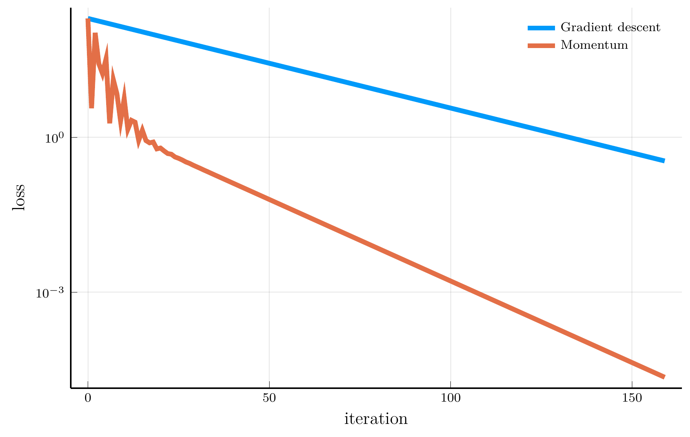
The loss plot confirms that momentum converges much faster than gradient descent.
RMSProp
When the curvature of the loss function varies across parameters, using a single learning rate \(\eta\) can be inefficient.
- RMSProp addresses this issue by scaling the learning rate according to the magnitude of recent gradients.
The root mean square propagation (RMSProp) algorithm defines: \[ \mathbf{v}_{n+1} = \rho \mathbf{v}_{n} + (1-\rho) (\nabla L(\mathbf{\theta}_n))^2, \] where \(\odot\) denotes elementwise multiplication.
The update rule for RMSProp is: \[ \mathbf{\theta}_{n+1} = \mathbf{\theta}_n - \eta \frac{\nabla L(\mathbf{\theta}_n)}{\sqrt{\mathbf{v}_{n+1}} + \epsilon}, \]
Intuitively, parameters with large gradients receive smaller updates.
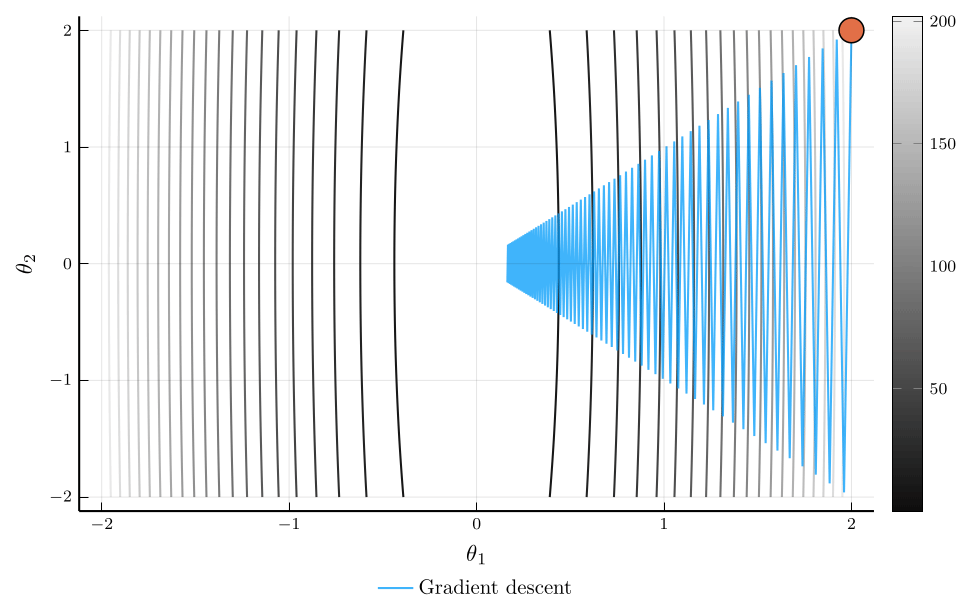
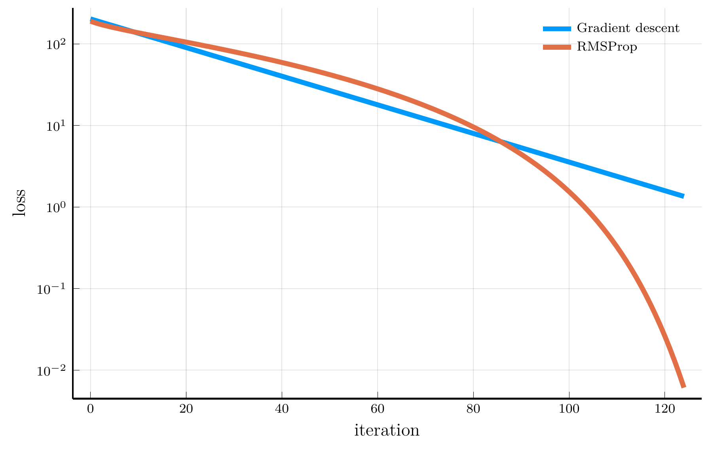
Adam
Momentum and RMSProp can be combined to yield one of the most widely used optimization algorithms in deep learning:
- Adam (Adaptive Moment Estimation) maintains exponentially decaying averages of the first and second moments of the gradients.
The Adam algorithm defines: \[ \begin{align} \mathbf{m}_{n+1} &= \beta_1 \mathbf{m}_{n} + (1 - \beta_1)\,\nabla L(\mathbf{\theta}_n),\\ \mathbf{v}_{n+1} &= \beta_2 \mathbf{v}_{n} + (1 - \beta_2)\,(\nabla L(\mathbf{\theta}_n))^{\!\odot 2}, \end{align} \] where \(\odot\) denotes elementwise multiplication.
The update rule for Adam is: \[ \mathbf{\theta}_{n+1} = \mathbf{\theta}_n - \eta \frac{\hat{\mathbf{m}}_{n+1}}{\sqrt{\hat{\mathbf{v}}_{n+1}} + \epsilon}, \] where \(\hat{\mathbf{m}}_{n} = \frac{\mathbf{m}_{n}}{1 - \beta_1^{n}}\) and \(\hat{\mathbf{v}}_{n} = \frac{\mathbf{v}_{n}}{1 - \beta_2^{n}}\) are bias corrections.
Adam is often the default optimiser in deep learning frameworks.
AdamW
In practice, weight regularization is often applied together with Adam.
- A naïve approach adds an \(L^2\) penalty directly to the gradient, which scales the regularization term by \(1/\sqrt{\hat{\mathbf{v}}_{n+1}}\), causing parameter-dependent shrinkage.
- The AdamW variant proposed by Loshchilov and Hutter (2019) decouples weight decay from the adaptive rescaling: \[ \mathbf{\theta}_{n+1} = (1 - \eta \lambda)\mathbf{\theta}_n - \eta \frac{\hat{\mathbf{m}}_{n+1}}{\sqrt{\hat{\mathbf{v}}_{n+1}} + \epsilon}, \] where \(\lambda\) is the weight decay coefficient. This decoupled formulation has become the standard default in modern deep learning frameworks.
Julia Implementation
We now illustrate how to use the optimisers discussed above in Julia.
- All examples use the
Optimisers.jllibrary, which provides efficient implementations of the algorithms described above.
As an illustrative example, we consider an anisotropic non-convex loss function: \[ L(\mathbf{\theta}) = \sum_{i=1}^n w_i \,\ell(\theta_i), \qquad \qquad \ell(\theta) = \theta^4 - 3\theta^2 + \theta, \qquad \qquad w_i\ge 0 \text{ and } \sum_{i=1}^n w_i = 1. \]
In Julia, we can implement this loss function as follows:
We can use gradient descent to minimise the loss function.
# Loss optimisation function
function loss_optimiser(loss, θ0, opt; steps=1_000, tol=1e-8)
θ = deepcopy(θ0) # make a copy to avoid in-place modifications
st = Optimisers.setup(opt, θ) # builds a “state tree”
losses = Float64[]; gnorms = Float64[]
for _ in 1:steps
ℓ, back = Zygote.pullback(loss, θ) # pullback of the loss
g = first(back(1.0)) # compute gradient
push!(losses, ℓ); push!(gnorms, norm(g))
if gnorms[end] ≤ tol; break; end
st, θ = Optimisers.update(st, θ, g) # update state/params
end
return θ, (losses=losses, grad_norms=gnorms)
endChanging optimisers
To perform the optimisation, we first define the optimizer:
We can then call the loss_optimiser function to perform the optimisation:
To switch to a different optimizer, we simply change the opt variable:
And call the loss_optimiser function again:
Comparing optimisers
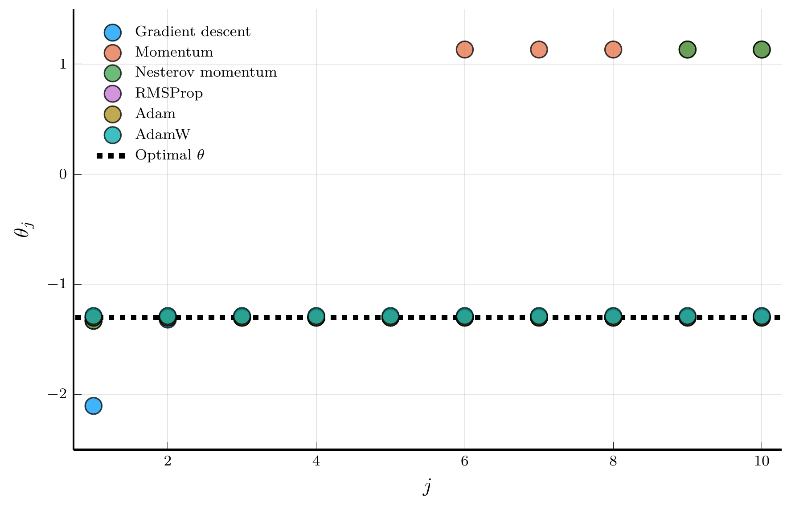Fitting a DNN
As a final example, we fit a deep neural network (DNN) to a nonlinear, high-dimensional function.
- The goal is to illustrate how a DNN can learn a complex mapping and generalize beyond the training data.
Define the multivariate function: \[ f(\mathbf{x}) = \frac{1}{n} \sum_{i=1}^n p(x_i), \qquad \qquad p(x) = \prod_{i=1}^5 (x - r_i), \] where the roots \(r_i\) are drawn from a standard normal distribution.
We fix \(n = 10\) and draw \(100,000\) sample pairs \((\mathbf{x}_i, y_i)\), where \(y_i = f(\mathbf{x}_i)\).
# Constructing function f
rng = Xoshiro(0) # pseudo random number generator
roots = randn(rng, 5) # polynomial roots
p(x) = prod(x .- roots) # univariate polynomial
f(x) = mean(p.(x)) # multivariate version
# Random samples
n_states, sample_size = 10, 100_000
x_samples = rand(rng, Uniform(-1,1), (n_states,sample_size))
y_samples = [f(x_samples[:,i]) for i = 1:sample_size]'DNN architecture
We define a DNN with two hidden layers of 32 units each and GELU activations.
Chain(
layer_1 = Dense(10 => 32, gelu_tanh), # 352 parameters
layer_2 = Dense(32 => 32, gelu_tanh), # 1_056 parameters
layer_3 = Dense(32 => 1), # 33 parameters
) # Total: 1_441 parameters,
# plus 0 states.
We then initialise the parameters and choose the optimiser:
(layer_1 = (weight = Leaf(Adam(eta=0.001, beta=(0.9, 0.999), epsilon=1.0e-8), (Float32[0.0 0.0 … 0.0 0.0; 0.0 0.0 … 0.0 0.0; … ; 0.0 0.0 … 0.0 0.0; 0.0 0.0 … 0.0 0.0], Float32[0.0 0.0 … 0.0 0.0; 0.0 0.0 … 0.0 0.0; … ; 0.0 0.0 … 0.0 0.0; 0.0 0.0 … 0.0 0.0], (0.9, 0.999))), bias = Leaf(Adam(eta=0.001, beta=(0.9, 0.999), epsilon=1.0e-8), (Float32[0.0, 0.0, 0.0, 0.0, 0.0, 0.0, 0.0, 0.0, 0.0, 0.0 … 0.0, 0.0, 0.0, 0.0, 0.0, 0.0, 0.0, 0.0, 0.0, 0.0], Float32[0.0, 0.0, 0.0, 0.0, 0.0, 0.0, 0.0, 0.0, 0.0, 0.0 … 0.0, 0.0, 0.0, 0.0, 0.0, 0.0, 0.0, 0.0, 0.0, 0.0], (0.9, 0.999)))), layer_2 = (weight = Leaf(Adam(eta=0.001, beta=(0.9, 0.999), epsilon=1.0e-8), (Float32[0.0 0.0 … 0.0 0.0; 0.0 0.0 … 0.0 0.0; … ; 0.0 0.0 … 0.0 0.0; 0.0 0.0 … 0.0 0.0], Float32[0.0 0.0 … 0.0 0.0; 0.0 0.0 … 0.0 0.0; … ; 0.0 0.0 … 0.0 0.0; 0.0 0.0 … 0.0 0.0], (0.9, 0.999))), bias = Leaf(Adam(eta=0.001, beta=(0.9, 0.999), epsilon=1.0e-8), (Float32[0.0, 0.0, 0.0, 0.0, 0.0, 0.0, 0.0, 0.0, 0.0, 0.0 … 0.0, 0.0, 0.0, 0.0, 0.0, 0.0, 0.0, 0.0, 0.0, 0.0], Float32[0.0, 0.0, 0.0, 0.0, 0.0, 0.0, 0.0, 0.0, 0.0, 0.0 … 0.0, 0.0, 0.0, 0.0, 0.0, 0.0, 0.0, 0.0, 0.0, 0.0], (0.9, 0.999)))), layer_3 = (weight = Leaf(Adam(eta=0.001, beta=(0.9, 0.999), epsilon=1.0e-8), (Float32[0.0 0.0 … 0.0 0.0], Float32[0.0 0.0 … 0.0 0.0], (0.9, 0.999))), bias = Leaf(Adam(eta=0.001, beta=(0.9, 0.999), epsilon=1.0e-8), (Float32[0.0], Float32[0.0], (0.9, 0.999)))))
DNN training loop
We then define the loss function:
loss_fn (generic function with 1 method)We finally run the training loop:
# train loop
loss_history = []
n_steps = 300_000
for _ in 1:n_steps
loss, layer_states = loss_fn(parameters, layer_states)
grad = gradient(p->loss_fn(p, layer_states)[1], parameters)[1]
opt_state, parameters = Optimisers.update(opt_state, parameters, grad)
push!(loss_history, loss)
if epoch % 5000 == 0
println("Epoch: $epoch, Loss: $loss")
end
endData and prediction for the DNN
The figure below presents the results.
- The left panel shows a random subsample of 256 data points (blue) and the corresponding DNN predictions (red)
- The two are nearly indistinguishable, indicating an excellent in-sample fit.
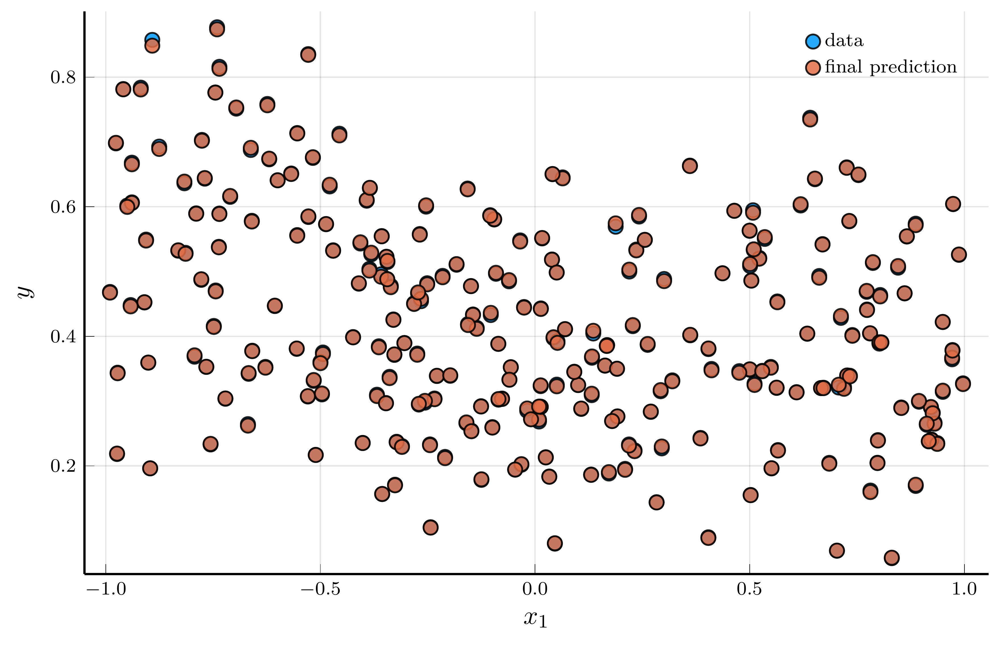
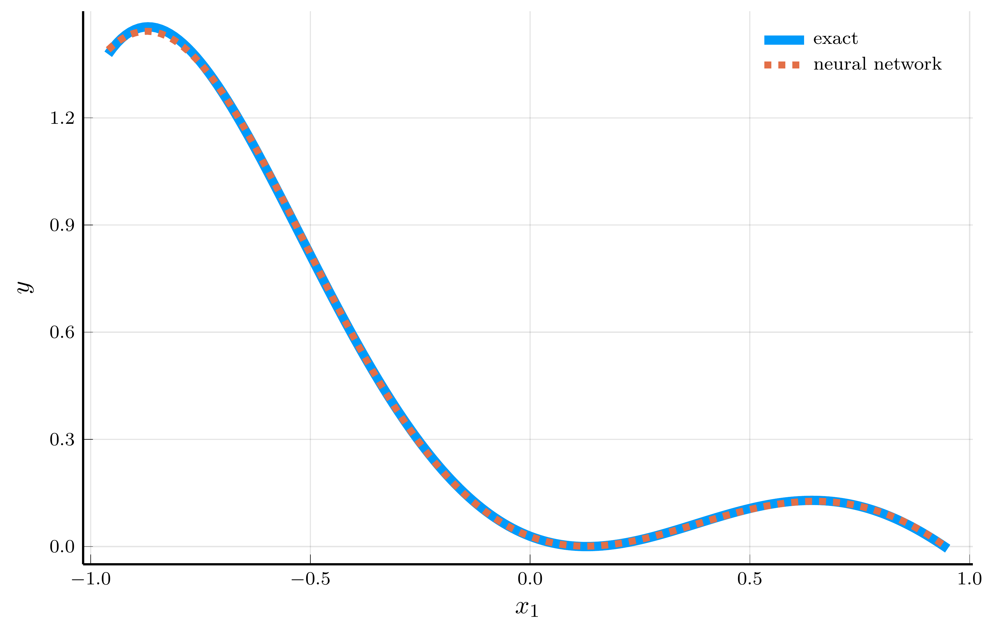
A natural concern is that the network might simply be memorizing the training data.
- To test this, we evaluate the network in the special case \(x_1 = x_2 = \cdots = x_n = x\)
- Then, \(f(\mathbf{x})\) reduces to \(p(x)\), a configuration that never appears in the random training sample.
Even without seeing this zero-probability case during training, the network’s predictions closely match \(f(\mathbf{x})\).
IV. Automatic Differentiation and Backpropagation
Automatic Differentiation
We have introduced several optimisation algorithms for training neural networks.
- All these methods are gradient-based — they rely on the derivatives of the loss function.
- Efficient and accurate computation of gradients is a central ingredient in modern machine learning.
Automatic differentiation provides a systematic way to compute these gradients.
- AD applies the chain rule algorithmically on a sequence of elementary operations.
- This makes it both exact (up to machine precision) and computationally efficient.
There are two main modes of automatic differentiation:
- Forward mode — derivatives are propagated forward from inputs to outputs.
- Reverse mode — derivatives are propagated backward from outputs to inputs.
Reverse mode is also known as backpropagation and forms the foundation of training algorithms for neural networks.
- We begin with forward mode AD, which is conceptually simpler and helps to build intuition.
Forward-Mode Automatic Differentiation
To build intuition for forward-mode AD, consider the first-order approximation of a function \(f(x)\) around a point \(x_0\): \[ f(x) = f(x_0) + f'(x_0)\,\epsilon + \mathcal{O}(\epsilon^2), \] where \(x = x_0 + \epsilon\) for a small perturbation \(\epsilon\), and \(\mathcal{O}(\epsilon^2)\) collects higher-order terms.
A first-order approximation is therefore characterized by two quantities:
- the function value \(f(x_0)\) and
- its derivative \(f'(x_0)\).
The Product Rule
Suppose we know the linear approximations of two functions, \[ f(x) = f(x_0) + f'(x_0)\,\epsilon + \mathcal{O}(\epsilon^2), \] \[ g(x) = g(x_0) + g'(x_0)\,\epsilon + \mathcal{O}(\epsilon^2). \]
Consider the product \(h(x) = f(x)g(x)\): \[ h(x) = \underbrace{f(x_0) g(x_0)}_{\color{#0072b2}{h(x_0)}} + \underbrace{[f'(x_0) g(x_0) + f(x_0) g'(x_0)]}_{\color{#d55e00}{h'(x_0)}}\,\epsilon + \mathcal{O}(\epsilon^2). \]
The Chain Rule
Now consider a composition \(h(x) = g(f(x))\).
- Substituting the linear approximation of \(f(x)\) into \(g(\cdot)\) gives: \[ \begin{align} h(x) &= g(f(x_0) + f'(x_0)\,\epsilon + \mathcal{O}(\epsilon^2)) \\ &= \underbrace{g(f(x_0))}_{\color{#0072b2}{h(x_0)}} + \underbrace{g'(f(x_0)) f'(x_0)}_{\color{#d55e00}{h'(x_0)}}\,\epsilon + \mathcal{O}(\epsilon^2), \end{align} \] which recovers the familiar chain rule.
Dual numbers
Combining a few simple rules, we can compute the linear approximation of arbitrarily complex fucntion
- This idea can be implemented in a computer using the concept of dual numbers.
We represent a dual number as a pair of numbers: \[ u = a + b\,\epsilon, \] where the primal part \(a\) stores the function value and the dual part \(b\) stores its derivative.
This construction is analogous to complex numbers
- For a complex number \(z = a + b i\), the defining property is \(i^2 = -1\).
- For a dual number, the defining property of the dual unit \(\epsilon\) is \(\epsilon^2 = 0\).
The Product of Dual Numbers
Given two dual numbers, \(u = a + b\,\epsilon\) and \(v = c + d\,\epsilon\), define: \[ u \times v = (a + b\,\epsilon) \times (c + d\,\epsilon) = ac + (ad + bc)\,\epsilon, \] which mirrors the product rule of derivatives.
Elementary Functions on Dual Numbers
Given a real function \(g(x)\), we can extend it to dual numbers: \[ g(a + b\,\epsilon) = g(a) + g'(a)\,b\,\epsilon, \] which automatically implements the chain rule.
Julia implementation
We can implement a basic automatic differentiation engine in Julia with only a few lines of code.
- We start by defining the dual number type
D(1.0, 1.0)Given this new number type, we can now define the basic operations on dual numbers.
# How to perform basic operations on dual numbers
import Base: +,-,*,/, convert, promote_rule, exp, sin, cos, log
+(x::D, y::D) = D(x.v + y.v, x.d + y.d)
-(x::D, y::D) = D(x.v - y.v, x.d - y.d)
*(x::D, y::D) = D(x.v * y.v, x.d * y.v + x.v * y.d)
/(x::D, y::D) = D(x.v / y.v, (x.v * y.d - y.v * x.d) / y.v^2)
exp(x::D) = D(exp(x.v), exp(x.v) * x.d)
log(x::D) = D(log(x.v), 1.0 / x.v * x.d)
sin(x::D) = D(sin(x.v), cos(x.v) * x.d)
cos(x::D) = D(cos(x.v), -sin(x.v) * x.d)
promote_rule(::Type{D}, ::Type{<:Number}) = D
Base.show(io::IO,x::D) = print(io,x.v," + ",x.d," ϵ")Computing the derivative of a function
We can now use the dual numbers to compute the derivatives of functions.
- First, define our test functions
We can now evaluate the functions at dual numbers
- To compute the derivative of a function \(f\), we construct \(u = x_0 + 1.0 * \epsilon\), evaluate \(f(u)\), and extract the dual part of the result.
f(u) = 2.718281828459045 + 5.43656365691809 ϵ | Exact derivative: 5.43656365691809
g(v) = -0.14550003380861354 + -11.872298959480581 ϵ | Exact derivative: -11.872298959480581Multiple dimensions
We can extend the dual numbers to multiple dimensions.
- Suppose \(\mathbf{y} = \mathbf{f}(\mathbf{x}) \in \mathbb{R}^m\) with \(\mathbf{x} \in \mathbb{R}^n\). Introduce a vector dual number \[ \mathbf{x} = \mathbf{x}_0 + \epsilon\,\mathbf{v}, \] where \(\mathbf{x}_0 \in \mathbb{R}^n\) is the primal part and \(\mathbf{v} \in \mathbb{R}^n\) is the tangent direction.
The first-order approximation of \(\mathbf{f}\) is \[ \mathbf{f}(\mathbf{x}) = \color{#0072b2}{\underbrace{\mathbf{f}(\mathbf{x}_0)}_{\text{primal}}} + \color{#d55e00}{\underbrace{\mathbf{Jf}(\mathbf{x}_0)\,\mathbf{v}}_{\text{Jacobian-vector product (JVP)}}}\,\epsilon + \mathcal{O}(\epsilon^2), \] where \(\mathbf{Jf}(\mathbf{x}_0)\in\mathbb{R}^{m\times n}\) has \((i,j)\) entry \(\partial f_i/\partial x_j(\mathbf{x}_0)\).
- Thus, applying \(\,\mathbf{f}\,\) to \((\mathbf{x}_0,\mathbf{v})\) returns both the value \(\mathbf{f}(\mathbf{x}_0)\) and the directional derivative \(\mathbf{Jf}(\mathbf{x}_0)\mathbf{v}\).
Cost: JVP vs. full Jacobian.
For \(f:\mathbb{R}^n\to\mathbb{R}^m\), a JVP needs only a single forward pass with the tangent \(\mathbf{v}\): \[ \text{cost(JVP)} \sim \mathcal{O}(\text{cost}(f)). \] Forming the full Jacobian by forward mode requires \(n\) passes (one per input direction): \[ \text{cost(Jacobian via forward mode)} \sim \mathcal{O}\!\left(n\,\text{cost}(f)\right). \]
Computational efficiency of JVPs and full Jacobians
To illustrate the computational efficiency of JVPs and full Jacobians, we compare JVPs to full Jacobians on the test function \[ f_i(\mathbf{x}) = \exp\!\left(-\tfrac{1}{n}\sum_{j=1}^n \sqrt{x_j}\right) + i, \qquad \qquad \mathbf{f}(\mathbf{x}) = \big[f_1(\mathbf{x}), \ldots, f_m(\mathbf{x})\big]^\top \in \mathbb{R}^m. \]
We can implement the JVP and full Jacobian computations in Julia using the ForwardDiff.jl package.
# Test function
f(x; n = 1) = [exp(-mean(sqrt.(x)))+i for i = 1:n]
# Compute JVP
x, v = [1.0, 2.0, 3.0], [0.1, 0.2, 0.3]
xdual = ForwardDiff.Dual{Float64}.(x, v) # vector of dual numbers
ydual = f(xdual; n = 2) # evaluate function at dual numbers
jvp = ForwardDiff.partials.(ydual) # jvp
# Compute Jacobian
jac = ForwardDiff.jacobian(x->f(x; n = 2), x)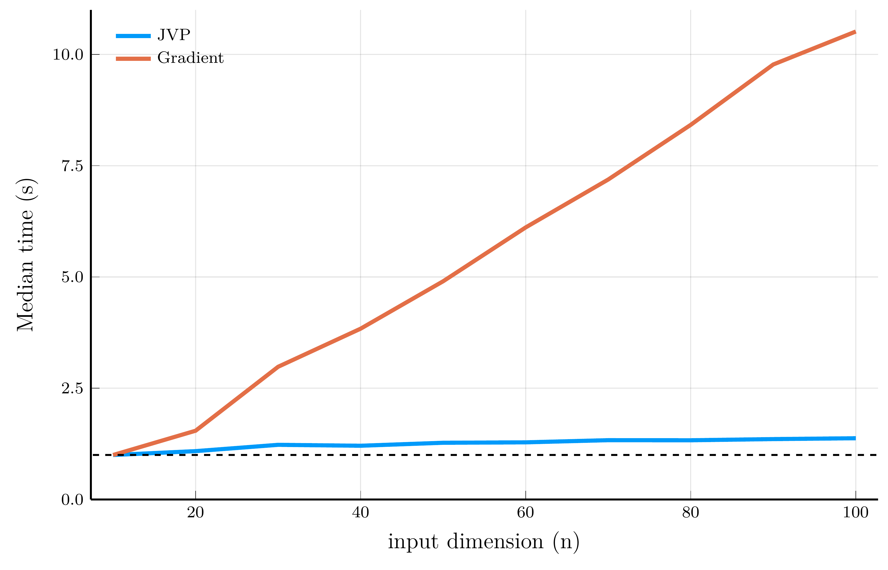
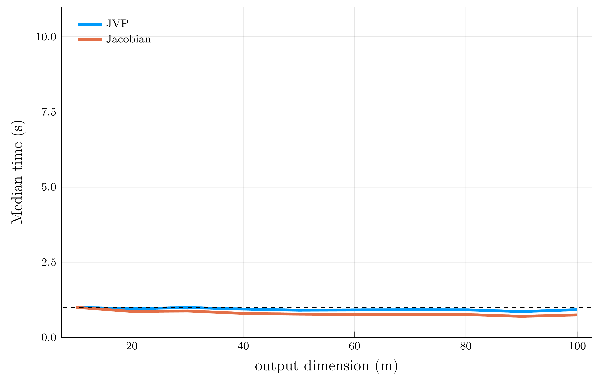
The order of operations matters
The order of operations matters when computing the Jacobian of a function.
- Consider the composition of functions \[ \mathbf{F}(\mathbf{x}) = \mathbf{f}(\mathbf{g}(\mathbf{h}(\mathbf{x}))), \] where \(\mathbf{h}:\mathbb{R}^n \!\to\! \mathbb{R}^p\), \(\mathbf{g}:\mathbb{R}^p \!\to\! \mathbb{R}^q\), and \(\mathbf{f}:\mathbb{R}^q \!\to\! \mathbb{R}^m\).
The chain rule implies the Jacobian of \(\mathbf{F}\) is the product of the Jacobians of \(\mathbf{f}\), \(\mathbf{g}\), and \(\mathbf{h}\): \[ \frac{\partial \mathbf{F}}{\partial \mathbf{x}^\top} = \color{#0072b2}{\underbrace{\frac{\partial \mathbf{f}}{\partial \mathbf{g}^\top}}_{m\times q}} \color{#d55e00}{\underbrace{\frac{\partial \mathbf{g}}{\partial \mathbf{h}^\top}}_{q\times p}} \color{#009e73}{\underbrace{\frac{\partial \mathbf{h}}{\partial \mathbf{x}^\top}}_{p\times n}}. \]
There are two natural ways to evaluate the product.
- Right-to-left (forward mode): \[ \frac{\partial \mathbf{F}}{\partial \mathbf{x}^\top} = \color{#0072b2}{\frac{\partial \mathbf{f}}{\partial \mathbf{g}^\top}} \left(\color{#d55e00}{\frac{\partial \mathbf{g}}{\partial \mathbf{h}^\top}} \color{#009e73}{\frac{\partial \mathbf{h}}{\partial \mathbf{x}^\top}}\right). \]
- Left-to-right (reverse mode): \[ \frac{\partial \mathbf{F}}{\partial \mathbf{x}^\top} = \left(\color{#0072b2}{\frac{\partial \mathbf{f}}{\partial \mathbf{g}^\top}} \color{#d55e00}{\frac{\partial \mathbf{g}}{\partial \mathbf{h}^\top}}\right) \color{#009e73}{\frac{\partial \mathbf{h}}{\partial \mathbf{x}^\top}}. \]
Consider the special case \(p = q = r\) and \(m = 1\) (a loss function for a DNN with two hidden layers of \(r\) units each).
- Forward mode: First term costs \(n\) Jacobian-vector products (JVPs), for a total cost of \(\mathcal{O}(r^2 n)\) operations.
- Reverse mode: Total cost corresponds to two vector-Jacobian products (VJPs), amounting to \(\mathcal{O}(r n)\) operations.
The computational graph
To understand how reverse mode works, it is useful to represent the function as a computational graph. Consider the function \[ f(x) = (x_1 + x_2)\,x_1^2. \]
Each operation in the function can be viewed as a node in a directed acyclic graph (DAG):
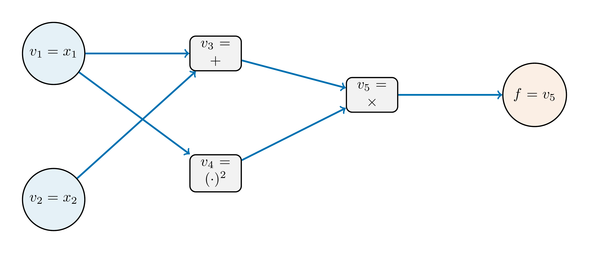
Reverse mode proceeds in two stages:
- A forward pass to compute and store the value at each node.
- A backward pass to accumulate gradients of the output with respect to each node.
Forward and backward passes
Forward pass: \[ v_1 = x_1, \qquad v_2 = x_2, \qquad v_3 = v_1 + v_2, \qquad v_4 = v_1^2, \qquad v_5 = v_3 v_4. \]
For \(x_1 = 1.0\) and \(x_2 = 2.0\), we obtain \[ v_1 = 1.0, \qquad v_2 = 2.0, \qquad v_3 = 3.0, \qquad v_4 = 1.0, \qquad v_5 = 3.0. \]
Backward pass:
- We seek \(\nabla_{\mathbf{x}} f = \left(\frac{\partial f}{\partial x_1}, \frac{\partial f}{\partial x_2}\right)\). Define the adjoints as \(\overline{v}_i \equiv \frac{\partial f}{\partial v_i}\) for \(i = 1, 2, 3, 4, 5\).
- Starting from the output \(v_5\), we initialize its adjoint as \(\overline{v}_5 \equiv \frac{\partial f}{\partial v_5} = 1\)
The adjoints at the last nodes are \[ \overline{v}_3 = \overline{v}_5 \cdot v_4 = 1.0, \qquad \overline{v}_4 = \overline{v}_5 \cdot v_3 = 3.0. \]
Moving one step further back, the local derivatives are \[\begin{equation} \frac{\partial v_3}{\partial v_1} = 1, \quad \frac{\partial v_3}{\partial v_2} = 1, \quad \frac{\partial v_4}{\partial v_1} = 2v_1, \quad \frac{\partial v_4}{\partial v_2} = 0. \end{equation}\]
The adjoint for \(v_1\) collects contributions from two branches: \[ \begin{align} \overline{v}_1 &{+}= \overline{v}_3 \frac{\partial v_3}{\partial v_1} = 1 \cdot 1 = 1,\\ \overline{v}_1 &{+}= \overline{v}_4 \frac{\partial v_4}{\partial v_1} = 3 \cdot 2v_1 = 6. \end{align} \]
Variable \(v_2\) affects only \(v_3\), so \[ \overline{v}_2 = \overline{v}_3 \frac{\partial v_3}{\partial v_2} = 1 \cdot 1 = 1. \] \[ \frac{\partial f}{\partial x_1} = \overline{v}_1 = 7, \qquad \frac{\partial f}{\partial x_2} = \overline{v}_2 = 1. \]
Julia implementation
We can implement reverse-mode automatic differentiation in Julia using the Zygote.jl package.
(7.0, 1.0)Internally, Zygote constructs the computational graph at compile time
- Then, it performs the backward pass to propagate adjoints through the graph.
Multi-output functions and VJPs
Why does Zygote.pullback return a function rather than the gradient directly?
- This design becomes essential when dealing with multi-output functions.
Consider the function \[ \mathbf{f}(\mathbf{x}) = (x_1 + x_2)x_1^2, x_1 x_2. \] whose Jacobian is \[ \mathbf{Jf}(\mathbf{x}) = \begin{pmatrix} 3 x_1^2 + 2 x_1 x_2 & x_1^2 \\ x_2 & x_1 \end{pmatrix}. \]
We can use Zygote.pullback to compute the gradient of \(\mathbf{f}\) with respect to \(\mathbf{x}\):
(7.0, 1.0)Here, back takes a vector of output adjoints and returns the vector-Jacobian product (VJP):
- This demostrates that reverse-mode AD computes VJPs efficiently with cost \(\mathcal{O}(\text{cost}(f))\)—independent of the output dimension \(m\).
Performance comparison
We now illustrate the scaling properties of reverse-mode AD using Zygote.jl.
- We employ the same test functions used in the forward-mode AD performance comparison.
For scalar-valued functions (left panel), the cost of a VJP is independent of the input dimension \(n\)
- For vector-valued functions (right panel), computing the full Jacobian requires one backward pass per output dimension.
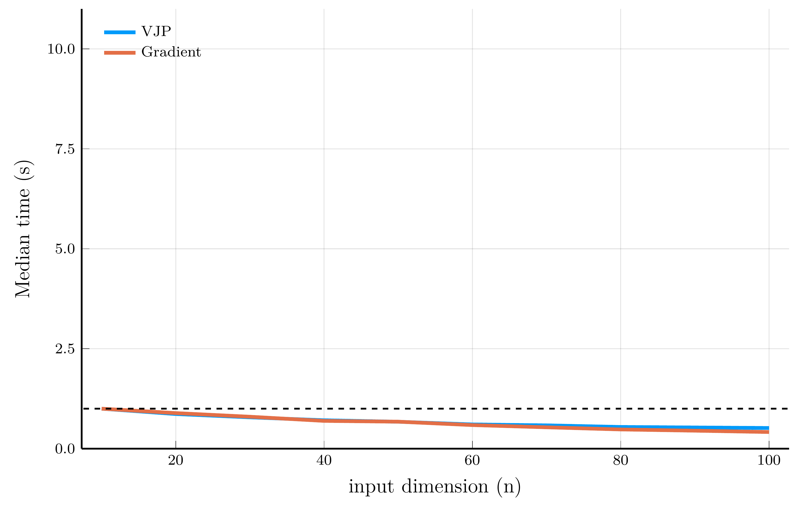
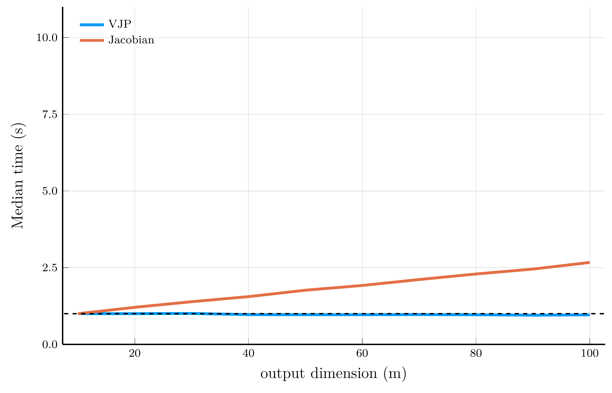
Taking stock.
Automatic differentiation provides an efficient way to compute gradients of functions.
- Forward-mode excels when the output dimension is large, while reverse-mode is better when the input dimension is large.
References
Cybenko, G. 1989. “Approximation by Superposition of Sigmoidal Functions.” Mathematics of Control, Signals and Systems 2 (4): 303–14.
Goodfellow, Ian, Yoshua Bengio, and Aaron Courville. 2016. Deep Learning. MIT Press.
Hastie, Trevor, Robert Tibshirani, and Jerome Friedman. 2009. The Elements of Statistical Learning: Data Mining, Inference, and Prediction. 2nd ed. New York, NY: Springer. https://hastie.su.domains/ElemStatLearn/.
Hornik, Kurt. 1991. “Approximation Capabilities of Multilayer Feedforward Networks.” Neural Networks 4 (2): 251–57. https://doi.org/https://doi.org/10.1016/0893-6080(91)90009-T.
Krizhevsky, Alex, Ilya Sutskever, and Geoffrey E Hinton. 2012. “ImageNet Classification with Deep Convolutional Neural Networks.” In Advances in Neural Information Processing Systems 25, edited by F. Pereira, C. J. C. Burges, L. Bottou, and K. Q. Weinberger, 1097–1105. Curran Associates, Inc. http://papers.nips.cc/paper/4824-imagenet-classification-with-deep-convolutional-neural-networks.pdf.
Leshno, Moshe, Vladimir Ya Lin, Allan Pinkus, and Shimon Schocken. 1993. “Multilayer Feedforward Networks with a Nonpolynomial Activation Function Can Approximate Any Function.” Neural Networks 6 (6): 861–67.
Loshchilov, Ilya, and Frank Hutter. 2019. “Decoupled Weight Decay Regularization.” In International Conference on Learning Representations. https://arxiv.org/abs/1711.05101.
Lu, Zhou, Hongming Pu, Feicheng Wang, Zhiqiang Hu, and Liwei Wang. 2017. “The Expressive Power of Neural Networks: A View from the Width.” In Advances in Neural Information Processing Systems, 30:6232–40.
Prince, Simon J. D. 2023. Understanding Deep Learning. Cambridge, UK: Cambridge University Press. https://udlbook.github.io/udlbook/.
Ross, Stephen A. 1976. “Options and Efficiency.” Quarterly Journal of Economics 90 (1): 75–89.